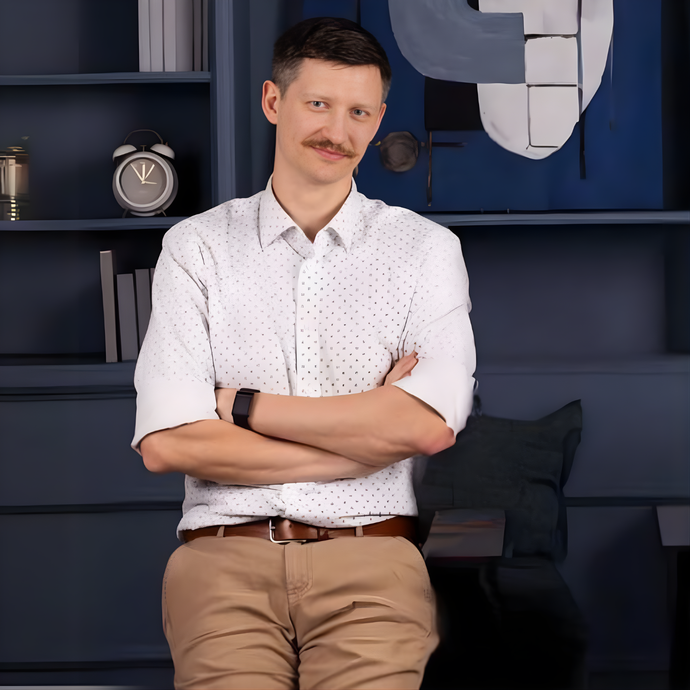

rocznego obrotu firmy IT, którą zbudowałem
// MIĘDZY NAMI INŻYNIERAMI
Między nami inżynierami
O pracy, biznesie i robieniu czegoś swojego — z perspektywy człowieka, który zaczynał jako programista, a potem musiał nauczyć się sprzedaży, marketingu, zarządzania i prowadzenia firmy.

01 / KIM JESTEM
Zaczynałem jako programista.
Kiedy zacząłem budować firmę, szybko okazało się, że samo programowanie już nie wystarcza.
Zakres odpowiedzialności zaczął rosnąć znacznie szybciej niż zakres mojej wiedzy.
I właśnie o tej drodze jest „Między nami inżynierami”.
Nie o tym, jak przestać być inżynierem.
O tym, co się dzieje, kiedy samo bycie dobrym inżynierem przestaje wystarczać.
02 / DROGA
Rozszerzanie zakresu odpowiedzialności.
Inżynier
Programista
Przedsiębiorca
Sprzedaż
Budowanie firm
Praca z ludźmi
03 / WIARYGODNOŚĆ
Nie znam tej drogi z książek. Przechodziłem ją w praktyce.
przychodu firmy szkoleniowej, którą założyłem
Microsoft MVP, m.in. za działalność edukacyjną i ponad 100 wystąpień publicznych
na 3 edycjach konferencji No Code Days, które zorganizowałem
Politechnika Warszawska
Jestem wykładowcą i mentorem na Politechnice Warszawskiej. Utworzyłem tam również autorski kierunek studiów podyplomowych.
Zarządzanie
Zarządzałem ludźmi zarówno w 30-osobowej firmie, jak i w dużych organizacjach.
04 / O CZYM ROZMAWIAMY
Problemy, które zaczynają się tam, gdzie kończy się technologia.
Kariera
Co robić, kiedy bycie dobrym specjalistą przestaje wystarczać. Zmiana roli. Ekspert czy manager. Większa odpowiedzialność.
Coś swojego
Jak przejść od pomysłu do pierwszego klienta i nie utknąć w wiecznym ulepszaniu produktu.
Biznes
Sprzedaż, klienci, pieniądze, ludzie i decyzje, których nikt nie uczył nas na studiach technicznych.
05 / YOUTUBE
Ostatnio na YouTube
06 / KONSULTACJA
Masz problem do rozgryzienia?
Etat czy coś swojego? Manager czy ekspert? Masz pomysł, ale nie wiesz, czy rzeczywiście ma sens?
Możemy usiąść nad tym razem.
Rozłożymy problem na części, zakwestionujemy założenia, uporządkujemy opcje i poszukamy następnego konkretnego ruchu.